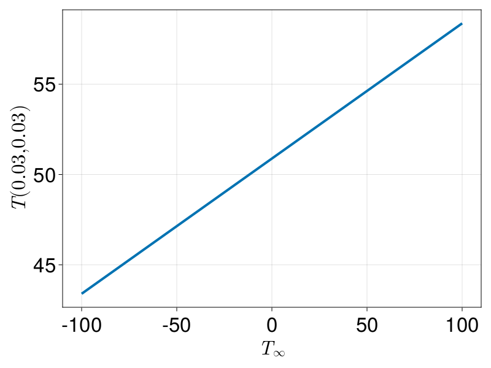

Equilibrium Temperature Distribution with Mixed Boundary Conditions and using EnsembleProblems
For this tutorial, we consider the following problem:
\[\begin{equation} \begin{aligned} \grad^2 T &= 0 & \vb x \in \Omega, \\ \grad T \vdot \vu n &= 0 & \vb x \in \Gamma_1, \\ T &= 40 & \vb x \in \Gamma_2, \\ k\grad T \vdot \vu n &= h(T_{\infty} - T) & \vb x \in \Gamma_3, \\ T &= 70 & \vb x \in \Gamma_4. \\ \end{aligned} \end{equation}\]
This domain $\Omega$ with boundary $\partial\Omega=\Gamma_1\cup\Gamma_2\cup\Gamma_3\cup\Gamma_4$ is shown below.

Let us start by defining the mesh.
using DelaunayTriangulation, FiniteVolumeMethod, CairoMakie
A, B, C, D, E, F, G = (0.0, 0.0),
(0.06, 0.0),
(0.06, 0.03),
(0.05, 0.03),
(0.03, 0.05),
(0.03, 0.06),
(0.0, 0.06)
bn1 = [G, A, B]
bn2 = [B, C]
bn3 = [C, D, E, F]
bn4 = [F, G]
bn = [bn1, bn2, bn3, bn4]
boundary_nodes, points = convert_boundary_points_to_indices(bn)
tri = triangulate(points; boundary_nodes)
refine!(tri; max_area=1e-4get_total_area(tri))
triplot(tri)
mesh = FVMGeometry(tri)FVMGeometry with 8238 control volumes, 16082 triangles, and 24319 edgesFor the boundary conditions, the parameters that we use are $k = 3$, $h = 20$, and $T_{\infty} = 20$ for thermal conductivity, heat transfer coefficient, and ambient temperature, respectively.
k = 3.0
h = 20.0
T∞ = 20.0
bc1 = (x, y, t, T, p) -> zero(T) # ∇T⋅n=0
bc2 = (x, y, t, T, p) -> oftype(T, 40.0) # T=40
bc3 = (x, y, t, T, p) -> -p.h * (p.T∞- T) / p.k # k∇T⋅n=h(T∞-T). The minus is since q = -∇T
bc4 = (x, y, t, T, p) -> oftype(T, 70.0) # T=70
parameters = (nothing, nothing, (h=h, T∞=T∞, k=k), nothing)
BCs = BoundaryConditions(mesh, (bc1, bc2, bc3, bc4),
(Neumann, Dirichlet, Neumann, Dirichlet);
parameters)BoundaryConditions with 4 boundary conditions with types (Neumann, Dirichlet, Neumann, Dirichlet)Now we can define the actual problem. For the initial condition, which recall is used as an initial guess for steady state problems, let us use an initial condition which ranges from $T=70$ at $y=0.06$ down to $T=40$ at $y=0$.
diffusion_function = (x, y, t, T, p) -> one(T)
f = (x, y) -> 500y + 40
initial_condition = [f(x, y) for (x, y) in each_point(tri)]
final_time = Inf
prob = FVMProblem(mesh, BCs;
diffusion_function,
initial_condition,
final_time)FVMProblem with 8238 nodes and time span (0.0, Inf)steady_prob = SteadyFVMProblem(prob)SteadyFVMProblem with 8238 nodesNow we can solve.
using OrdinaryDiffEq, SteadyStateDiffEq
sol = solve(steady_prob, DynamicSS(Rosenbrock23()))u: 8238-element Vector{Float64}:
70.0
53.10259920333329
40.0
40.0
44.13578834120672
⋮
54.07293382935639
48.246919643865496
48.119992679511604
52.16124801403591
49.61724214403759fig, ax, sc = tricontourf(tri, sol.u, levels=40:70, axis=(xlabel="x", ylabel="y"))
fig
Let us now suppose we are interested in how the ambient temperature, $T_{\infty}$, affects the temperature distribution. In particular, let us ask the following question:
What range of $T_{\infty}$ will allow the temperature at $(0.03, 0.03)$ to be between $50$ and $55$?
To answer this question, we use an EnsembleProblem so that we can solve the problem over many values of $T_{\infty}$ efficiently. For these new problems, it would be a good idea to use a new initial condition given by the solution of the previous problem.
copyto!(prob.initial_condition, sol.u)
using Accessors
T∞_range = LinRange(-100, 100, 101)
ens_prob = EnsembleProblem(steady_prob,
prob_func=(prob, i, repeat) -> let T∞_range = T∞_range, h = h, k = k
_prob =
@set prob.problem.conditions.functions[3].parameters =
(h=h, T∞=T∞_range[i], k=k)
return _prob
end)
esol = solve(ens_prob, DynamicSS(Rosenbrock23()), EnsembleSerial(); trajectories=length(T∞_range))EnsembleSolution Solution of length 101 with uType:
SciMLBase.NonlinearSolution{Float64, 1, Vector{Float64}, Vector{Float64}, SciMLBase.SteadyStateProblem{Vector{Float64}, true, @NamedTuple{duplicated_du::PreallocationTools.DiffCache{Matrix{Float64}, Vector{Float64}}, dirichlet_nodes::Vector{Int64}, solid_triangles::Vector{Tuple{Int64, Int64, Int64}}, solid_vertices::Vector{Int64}, chunked_solid_triangles::ChunkSplitters.Chunk{Vector{Tuple{Int64, Int64, Int64}}}, boundary_edges::Vector{Tuple{Int64, Int64}}, chunked_boundary_edges::ChunkSplitters.Chunk{Vector{Tuple{Int64, Int64}}}, parallel::Val{true}, prob::FVMProblem{FVMGeometry{DelaunayTriangulation.Triangulation{Vector{Tuple{Float64, Float64}}, Set{Tuple{Int64, Int64, Int64}}, Int64, Tuple{Int64, Int64}, Set{Tuple{Int64, Int64}}, Vector{Vector{Int64}}, Dict{Tuple{Int64, Int64}, Tuple{Int64, Int64}}, OrderedCollections.OrderedDict{Int64, Int64}, OrderedCollections.OrderedDict{Int64, UnitRange{Int64}}, Dict{Int64, DelaunayTriangulation.RepresentativeCoordinates{Int64, Float64}}}, DelaunayTriangulation.TriangulationStatistics{Tuple{Int64, Int64, Int64}, Float64, Int64}}, Conditions{Tuple{FiniteVolumeMethod.ParametrisedFunction{Main.var"##1027".var"#1#2", Nothing}, FiniteVolumeMethod.ParametrisedFunction{Main.var"##1027".var"#3#4", Nothing}, FiniteVolumeMethod.ParametrisedFunction{Main.var"##1027".var"#5#6", @NamedTuple{h::Float64, T∞::Float64, k::Float64}}, FiniteVolumeMethod.ParametrisedFunction{Main.var"##1027".var"#7#8", Nothing}}}, FiniteVolumeMethod.var"#65#66"{Main.var"##1027".var"#9#10", Nothing}, Nothing, FiniteVolumeMethod.var"#19#21", Nothing, Vector{Float64}, Float64}}, SciMLBase.ODEFunction{true, SciMLBase.AutoSpecialize, SciMLBase.ODEFunction{true, SciMLBase.AutoSpecialize, typeof(FiniteVolumeMethod.fvm_eqs!), LinearAlgebra.UniformScaling{Bool}, Nothing, Nothing, Nothing, Nothing, Nothing, SparseArrays.SparseMatrixCSC{Float64, Int64}, SparseArrays.SparseMatrixCSC{Float64, Int64}, Nothing, Nothing, Nothing, Nothing, Nothing, Nothing, Nothing, typeof(SciMLBase.DEFAULT_OBSERVED), Nothing, Nothing}, LinearAlgebra.UniformScaling{Bool}, Nothing, Nothing, Nothing, Nothing, Nothing, SparseArrays.SparseMatrixCSC{Float64, Int64}, SparseArrays.SparseMatrixCSC{Float64, Int64}, Nothing, Nothing, Nothing, Nothing, Nothing, Nothing, Nothing, typeof(SciMLBase.DEFAULT_OBSERVED), Nothing, Nothing}, Base.Pairs{Symbol, SciMLBase.CallbackSet{Tuple{}, Tuple{SciMLBase.DiscreteCallback{FiniteVolumeMethod.var"#100#101", typeof(FiniteVolumeMethod.update_dirichlet_nodes!), typeof(SciMLBase.INITIALIZE_DEFAULT), typeof(SciMLBase.FINALIZE_DEFAULT)}}}, Tuple{Symbol}, @NamedTuple{callback::SciMLBase.CallbackSet{Tuple{}, Tuple{SciMLBase.DiscreteCallback{FiniteVolumeMethod.var"#100#101", typeof(FiniteVolumeMethod.update_dirichlet_nodes!), typeof(SciMLBase.INITIALIZE_DEFAULT), typeof(SciMLBase.FINALIZE_DEFAULT)}}}}}}, SteadyStateDiffEq.DynamicSS{OrdinaryDiffEq.Rosenbrock23{0, true, Nothing, typeof(OrdinaryDiffEq.DEFAULT_PRECS), Val{:forward}, true, nothing}, Float64, Float64, Float64, DiffEqBase.NLSolveTerminationCondition{DiffEqBase.NLSolveTerminationMode.SteadyStateDefault, Float64, Nothing}}, Nothing, Nothing, DiffEqBase.Stats}From these results, let us now extract the temperature at $(0.03, 0.03)$. We will use NaturalNeighbours.jl for this.
using NaturalNeighbours
itps = [interpolate(tri, esol[i].u) for i in eachindex(esol)];
itp_vals = [itp(0.03, 0.03; method=Sibson()) for itp in itps]
# If you want piecewise linear interpolation, use either method=Triangle()
# or itp_vals = [pl_interpolate(prob, T, sol.u, 0.03, 0.03) for sol in esol], where
# T = jump_and_march(tri, (0.03, 0.03)).
fig = Figure(fontsize=33)
ax = Axis(fig[1, 1], xlabel=L"T_{\infty}", ylabel=L"T(0.03, 0.03)")
lines!(ax, T∞_range, itp_vals, linewidth=4)
fig
We see that the temperature at this point seems to increase linearly with $T_{\infty}$. Let us find precisely where this curve meets $T=50$ and $T=55$.
using NonlinearSolve, DataInterpolations
itp = LinearInterpolation(itp_vals, T∞_range)
rootf = (u, p) -> p.itp(u) - p.τ[]
Tthresh = Ref(50.0)
prob = IntervalNonlinearProblem(rootf, (-100.0, 100.0), (itp=itp, τ=Tthresh))
sol50 = solve(prob, ITP())u: -11.80210839583255Tthresh[] = 55.0
sol55 = solve(prob, ITP())u: 55.00515873347367So, it seems like the answer to our question is $-11.8 \leq T_{\infty} \leq 55$. Here is an animation of the temperature distribution as $T_{\infty}$ varies.
fig = Figure(fontsize=33)
i = Observable(1)
tt = map(i -> L"T_{\infty} = %$(rpad(round(T∞_range[i], digits=3),5,'0'))", i)
u = map(i -> esol.u[i], i)
ax = Axis(fig[1, 1], xlabel=L"x", ylabel=L"y",
title=tt, titlealign=:left)
tricontourf!(ax, tri, u, levels=40:70, extendlow=:auto, extendhigh=:auto)
tightlimits!(ax)
record(fig, joinpath(@__DIR__, "../figures", "temperature_animation.mp4"), eachindex(esol);
framerate=12) do _i
i[] = _i
end;Just the code
An uncommented version of this example is given below. You can view the source code for this file here.
using DelaunayTriangulation, FiniteVolumeMethod, CairoMakie
A, B, C, D, E, F, G = (0.0, 0.0),
(0.06, 0.0),
(0.06, 0.03),
(0.05, 0.03),
(0.03, 0.05),
(0.03, 0.06),
(0.0, 0.06)
bn1 = [G, A, B]
bn2 = [B, C]
bn3 = [C, D, E, F]
bn4 = [F, G]
bn = [bn1, bn2, bn3, bn4]
boundary_nodes, points = convert_boundary_points_to_indices(bn)
tri = triangulate(points; boundary_nodes)
refine!(tri; max_area=1e-4get_total_area(tri))
triplot(tri)
mesh = FVMGeometry(tri)
k = 3.0
h = 20.0
T∞ = 20.0
bc1 = (x, y, t, T, p) -> zero(T) # ∇T⋅n=0
bc2 = (x, y, t, T, p) -> oftype(T, 40.0) # T=40
bc3 = (x, y, t, T, p) -> -p.h * (p.T∞- T) / p.k # k∇T⋅n=h(T∞-T). The minus is since q = -∇T
bc4 = (x, y, t, T, p) -> oftype(T, 70.0) # T=70
parameters = (nothing, nothing, (h=h, T∞=T∞, k=k), nothing)
BCs = BoundaryConditions(mesh, (bc1, bc2, bc3, bc4),
(Neumann, Dirichlet, Neumann, Dirichlet);
parameters)
diffusion_function = (x, y, t, T, p) -> one(T)
f = (x, y) -> 500y + 40
initial_condition = [f(x, y) for (x, y) in each_point(tri)]
final_time = Inf
prob = FVMProblem(mesh, BCs;
diffusion_function,
initial_condition,
final_time)
steady_prob = SteadyFVMProblem(prob)
using OrdinaryDiffEq, SteadyStateDiffEq
sol = solve(steady_prob, DynamicSS(Rosenbrock23()))
fig, ax, sc = tricontourf(tri, sol.u, levels=40:70, axis=(xlabel="x", ylabel="y"))
fig
copyto!(prob.initial_condition, sol.u)
using Accessors
T∞_range = LinRange(-100, 100, 101)
ens_prob = EnsembleProblem(steady_prob,
prob_func=(prob, i, repeat) -> let T∞_range = T∞_range, h = h, k = k
_prob =
@set prob.problem.conditions.functions[3].parameters =
(h=h, T∞=T∞_range[i], k=k)
return _prob
end)
esol = solve(ens_prob, DynamicSS(Rosenbrock23()), EnsembleSerial(); trajectories=length(T∞_range))
using NaturalNeighbours
itps = [interpolate(tri, esol[i].u) for i in eachindex(esol)];
itp_vals = [itp(0.03, 0.03; method=Sibson()) for itp in itps]
# If you want piecewise linear interpolation, use either method=Triangle()
# or itp_vals = [pl_interpolate(prob, T, sol.u, 0.03, 0.03) for sol in esol], where
# T = jump_and_march(tri, (0.03, 0.03)).
fig = Figure(fontsize=33)
ax = Axis(fig[1, 1], xlabel=L"T_{\infty}", ylabel=L"T(0.03, 0.03)")
lines!(ax, T∞_range, itp_vals, linewidth=4)
fig
using NonlinearSolve, DataInterpolations
itp = LinearInterpolation(itp_vals, T∞_range)
rootf = (u, p) -> p.itp(u) - p.τ[]
Tthresh = Ref(50.0)
prob = IntervalNonlinearProblem(rootf, (-100.0, 100.0), (itp=itp, τ=Tthresh))
sol50 = solve(prob, ITP())
Tthresh[] = 55.0
sol55 = solve(prob, ITP())
fig = Figure(fontsize=33)
i = Observable(1)
tt = map(i -> L"T_{\infty} = %$(rpad(round(T∞_range[i], digits=3),5,'0'))", i)
u = map(i -> esol.u[i], i)
ax = Axis(fig[1, 1], xlabel=L"x", ylabel=L"y",
title=tt, titlealign=:left)
tricontourf!(ax, tri, u, levels=40:70, extendlow=:auto, extendhigh=:auto)
tightlimits!(ax)
record(fig, joinpath(@__DIR__, "../figures", "temperature_animation.mp4"), eachindex(esol);
framerate=12) do _i
i[] = _i
end;This page was generated using Literate.jl.